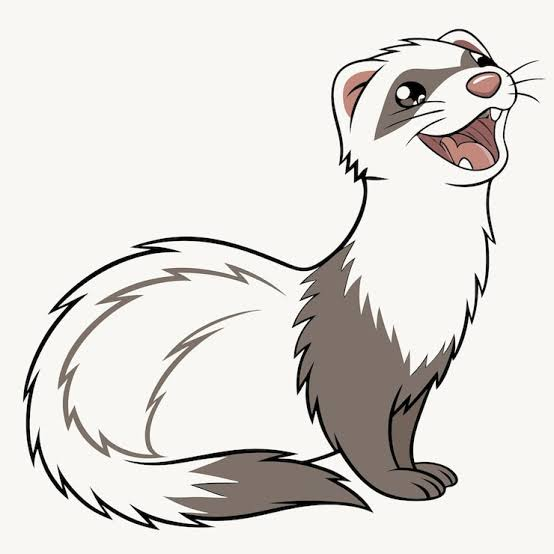
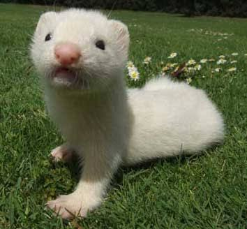
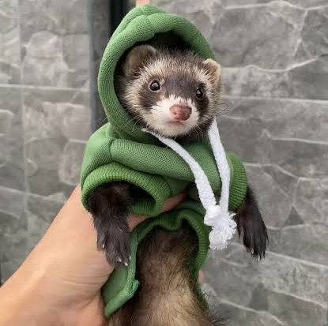

Parrafo 1
Los hurones son mascotas domésticas fascinantesque pertenecen a la familia de los mustélidos, la misma de las nutrias y los tejones. Tienen un cuerpo alargado, flexible y patas cortas, lo que les permite explorar rincones estrechos con gran facilidad. Son conocidos por su naturaleza sumamente curiosa, enérgica y juguetona, pasando sus horas de vigilia todo a su alrededor y escondiendo objetos pequeños en lugares secretos.
Parrafo 2

A pesar de su gran energía cuando están despiertos, los hurones son animales crepusculares que duermen entre 14 y 18 horas al día. Son excelentes compañeros para personas que trabajan, ya que se adaptan bien a los horarios de sus dueños. Requieren una dieta estrictamente carnívora, alta en proteínas y grasas animales, y necesitan pasar varias horas al día fuera de su jaula para ejercitarse y socializar adecuadamente.
Parrafo 3

La domesticación del hurón se remonta a miles de años atrás, cuando fueron utilizados inicialmente para la caza de conejos y el control de plagas de roedores en los graneros debido a su agilidad para introducirse en las madrigueras. Con el paso del tiempo, su rol cambió radicalmente hasta convertirse en el tercer animal de compañía mamífero más popular en muchos hogares occidentales. Esta transición se debe a su capacidad para formar fuertes lazos afectivos con los humanos, respondiendo a su nombre y aprendiendo trucos sencillos mediante el refuerzo positivo.
Parrafo 4

En el ámbito de la convivencia, estos animales destacan por su particular forma de comunicarse y expresar alegría, la cual incluye la famosa "danza de guerra del hurón", un comportamiento donde saltan de lado, chocan contra las paredes y emiten un suave sonido chirriante conocido en inglés como dooking. Sin embargo, tenerlos implica una gran responsabilidad, ya que poseen un olor corporal almizclado natural y una tendencia instintiva a morder cables o tragar objetos de goma, lo que exige una estricta supervisión para garantizar su seguridad dentro del hogar.
Haz click Aqui para leer mas sobre hurones